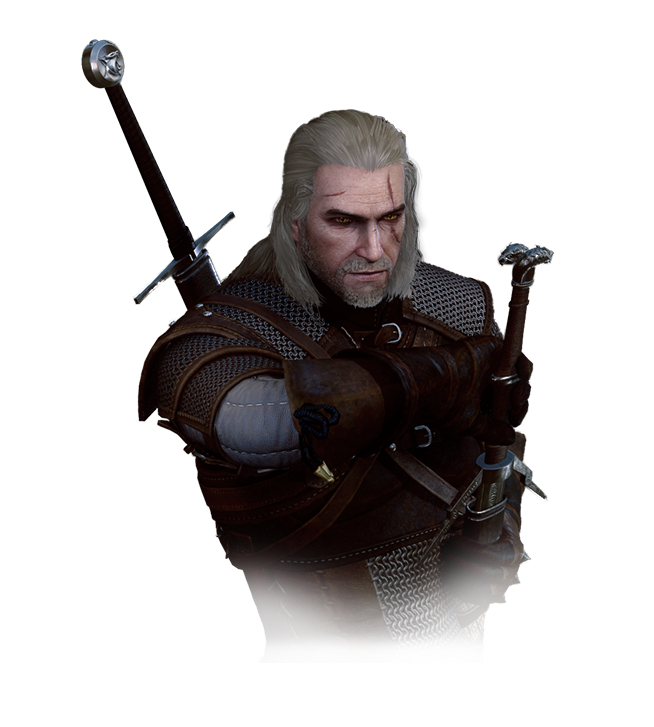

利维亚的杰洛特

利维亚的杰洛特是一个虚构人物，为波兰作家安德烈·斯帕克沃斯基的短篇小说系列《猎魔人》和其同名改编游戏的主角。他是书中为数不多的猎魔人之一（幼时经历身体突变及严格训练获得强大力量，足以猎杀凶怪），在旅行中接受各种委托，完成后获得一定的报酬，以此谋生。
名字来源
虽然杰洛特的全名是利维亚的杰洛特，但他并不是出生在利维亚。杰洛特在出生后不久就因意外而被他母亲薇森娜遗弃在科德温王国境内的凯尔·莫罕城堡，并在那里成长和接受训练成为猎魔人。为了博取今后潜在客户的信任，年轻的猎魔人一般会给自己捏造一个姓氏。
后来，杰洛特因为在偶然参加的一场战斗中的英勇表现而被利维亚女王米薇册封为骑士，并正式授予了他“利维亚的”之头衔，这让他感到有点好笑。他因此真正成为了一名利维亚骑士，不过在他临阵离开军队后很快又被剥夺了。
性格
大部分情况下，杰洛特是一个冷漠、愤世嫉俗、阴沉的人。不过在冷酷的外表之下，他还有一些潜藏的其他性格特质，譬如幽默感以及对受苦受难者的关心。
杰洛特还特别善于化解矛盾，这得益于他九十余年环游世界的经历。不过这也让他对他认为残忍、愚蠢的事情面前经常表露出轻蔑的态度和隐晦的嘲讽。
能力
像所有猎魔人一样，杰洛特是职业怪物猎手。他拥有超乎常人的力量和速度，杰洛特在猎魔人的青草试炼中展示出不寻常的忍受能力并存活了下来，从而获得了这些能力。
身为狼学派的猎魔人，剑术和法印是杰洛特最常用的两种攻击方式，因为它们的使用简单有效，适合对付各种类型的敌人。
法印
猎魔人并不喜欢术士使用的复杂咒语，而偏向于可以在战斗中单手迅速施放的简单法术，这种法术被称之为”法印“

| 亚登(Yrden) |
昆恩(Quen) |
伊格尼(Igni) |
亚克西(Axii) |
阿尔德(Aard) |
- 亚登:设定在地表或者地板的魔法陷阱，亚登之印可以对敌人照成不同的效果
- 昆恩:形成一个法力护盾围绕猎魔人，让他暂时无法被伤害
- 伊格尼:这种法印喷出火焰就可以焚化敌人，或是用于点燃木柴、炸弹或是营火
- 亚克西:可以让猎魔人影响他人心智、用来魅惑并控制他人
- 阿尔德:放出型念力，用来击退、击晕、击倒甚至解除武装对手。
剑术
杰洛特是一位剑术大师。人们喜欢以芭蕾术语中的“皮鲁埃特”来命名杰洛特的剑术风格，这是因为其兼具华丽性、速度感与实用性，杰洛特挥舞起剑来如舞蹈家一样优雅，而每一击又同阿瑞斯的宝剑一样致命和迅捷。在小说中，杰洛特以能够依靠极快的反应速度格挡飞来的箭矢而闻名。
文学分析与反响
杰洛特被描述为20世纪90年代波兰流行文化“新自由反政治”精神的象征。他是一个专业人士，认真履行自己的职责，不愿参与当代政治的“无谓争吵”。
波兰科幻作家马雷克·奥尔默斯（Marek Oramus）把杰洛特与雷蒙德·钱德勒笔下的著名人物菲利普·马洛相比较。
2012年，GamesRadar在评出的电子游戏史最佳英雄中把杰洛特排在第50位。